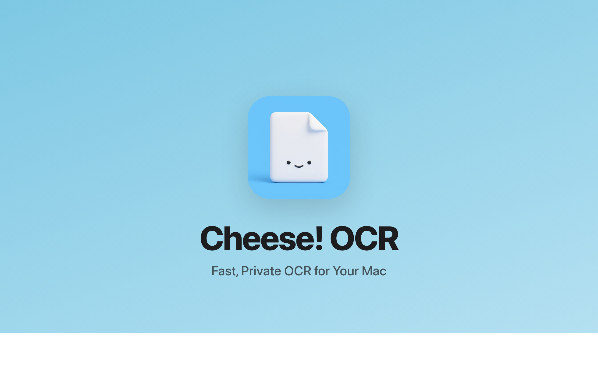
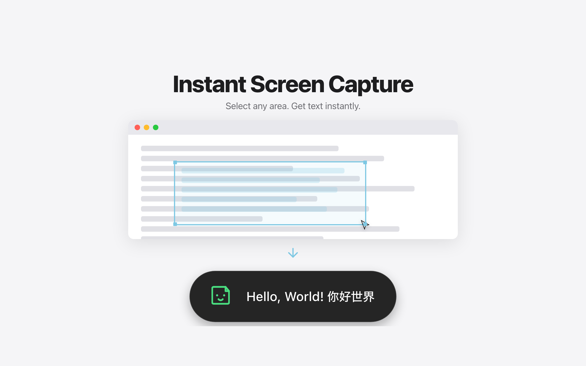
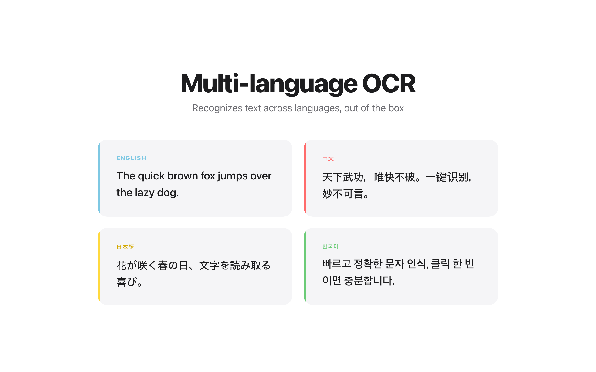
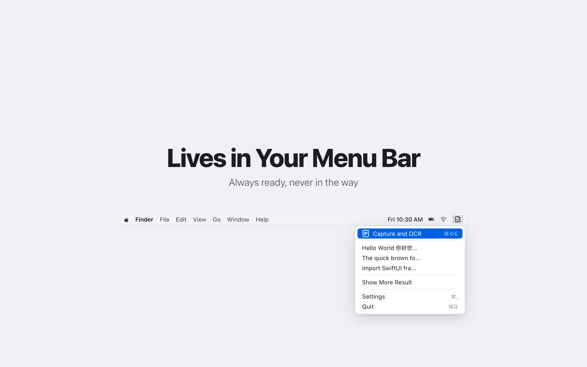

필요한 기능만, 군더더기 없이.
단축키를 누르고 영역을 선택하기만 하면, 텍스트가 바로 추출됩니다.
Apple Vision 기반 온디바이스 처리. 네트워크 통신도, 데이터 수집도 전혀 없습니다.
설정 없이 한국어·영어·중국어·일본어 텍스트를 그대로 인식합니다.
인식된 텍스트가 즉시 클립보드에 들어가, 바로 붙여넣을 수 있습니다.
네이티브 macOS 프레임워크로 제작. 용량도 동작도 가볍고, 인식은 매우 빠릅니다.
과거 OCR 결과를 목록에서 확인하고 검색할 수 있습니다. 잡아둔 텍스트를 잃어버릴 일이 없습니다.
Cheese! OCR의 매력을 한 장씩.




일상의 작은 번거로움을, 순식간에.
스캔된 참고 문헌에서 인용하고 싶을 때, 직접 타자를 치지 않고 영역 선택만으로 본문을 꺼낼 수 있습니다.
프로그래밍 영상을 일시정지하고, 화면 속 코드를 OCR하여 에디터에 그대로 붙여넣으세요.
동료가 보낸 에러 화면 스크린샷. 텍스트를 꺼내 검색과 공유가 한순간에 끝납니다.
3단계, 군더더기는 없습니다.
직접 설정한 단축키로 화면 캡처를 실행합니다.
텍스트가 포함된 부분을 드래그로 감쌉니다.
인식된 텍스트가 즉시 클립보드에 들어갑니다.
짧고 분명하게.